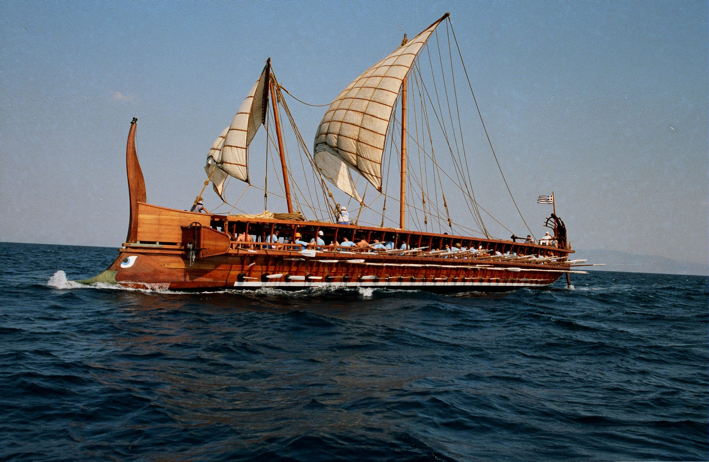
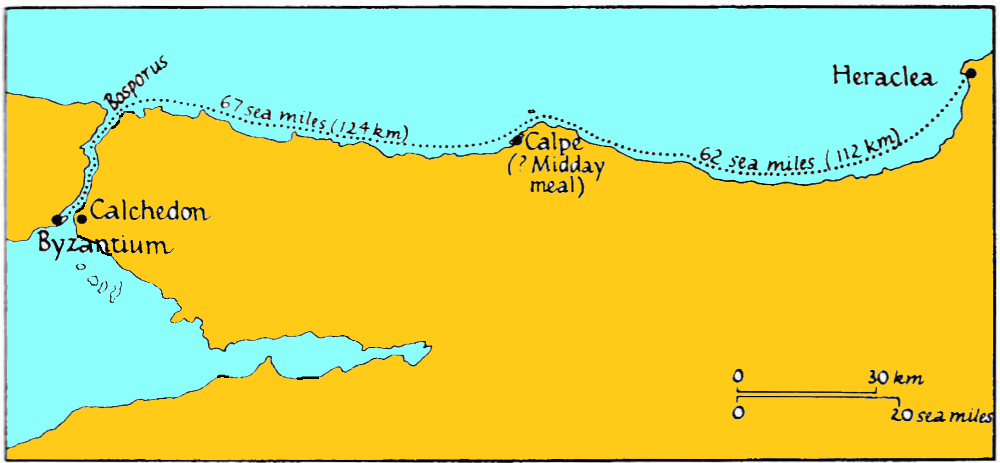
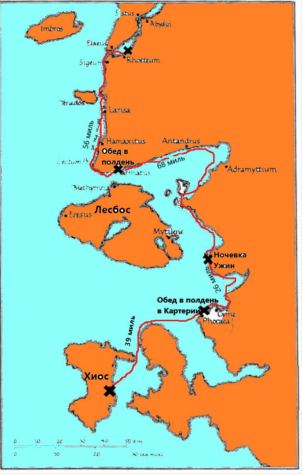

Мы установили, что большая часть исследователей поддерживает трехъярусную модель рассадки гребцов на триере, которая окончательно сформировалась в работе Моррисона 1941 года и воплотилась в конструкции реплики афинской триеры Olympias.
Хотя противников «общепринятой теории» явное меньшинство, это не означает, что их мнение можно игнорировать. Тем более, что в их работах поставлены вопросы, на которые пока не могут ответить сторонники «трехэтажной» триеры.
Выше мы говорили о трех моряках-практиках, которые упорно не хотели признавать общепринятую модель размещения гребцов на триере. В наше время их дело продолжил еще один моряк, лейтенант-коммандер британского Королевского флота (в отставке) Алек Тилли. Он оказался настолько настойчив, что даже сумел опубликовать статью с изложением своих аргументов в отчете об испытаниях реплики Olympias.

Естественно, главное, на что делается упор в споре со сторонниками господствующего представления о триере как трехъярусном корабле – это отсутствие античных изображений такого корабля. Создатель и главный апологет современной модели трехъярусной триеры Джон Моррисон так объяснял этот факт.
It seems likely that the ship had become so complicated a subject to depict, with its three banks of oars and the problems of perspective which these, as well as the outrigger supports and deckstanchions, presented, that artists in general had been avoiding the task .
Вполне вероятно, что корабль с тремя рядами весел стал довольно сложным объектом для изображения; возникли такие проблемы с перспективой (с учетом еще и необходимости изображать опоры постицы и пиллерсы палубы), что художники вообще избегали браться за решение этой задачи.
Morrison and Williams, Greek Oared Ships, 900-322 B.C, 1968, p. 169
Понятно, конечно, что это надуманный аргумент. Античные художники решали куда более сложные задачи при создании своих творений и несправедливо обвинять их в профессиональной ограниченности тогда и только тогда, когда дело касается изображения кораблей. Вот как пишет об этом еще один противник концепции Моррисона американский историк античности Боримир Джордан:
In my opinion artistic incapacity should have been rejected as nonsense at the outset. One wonders how educated men, familiar with the ancients’ unsurpassed understanding of the much more complicated human and animal anatomies, could claim they were incompetent to draw ships
По-моему неспособность художника должна быть отвергнута как бессмыслица с самого начала. Удивительно, как образованные люди, близко знакомые с непревзойденным пониманием античными мастерами куда более сложных образов анатомии животных и человека, могут утверждать, что они неспособны нарисовать корабль.
BORIMIR JORDAN, The Mariner's Mirror Vol.92-2, 2006, P.233
Итак, отсутствие изображений трехъярусных кораблей остается весомым аргументов противников господствующей модели триеры.
Какие еще контраргументы выставляют скептически настроенные исследователи?
Тилли считает, что модель триеры в натуральную величину, воплощенная в новоделе Olympias , слишком большая и тяжелая. Это не позволяет ее экипажу вытаскивать триеру на берег, о чем неоднократно говорилось в литературных памятниках античности. К рассмотренным нами ранее примерам добавим, например, данное Геродотом описание потерь персидского флота от неожиданно налетевшего мощного шторма
Между тем персидский флот отдал якоря и, выйдя в море, достиг берегов Магнесии между городом Касфанея и мысом Сепиада. Первые ряды кораблей бросили якорь непосредственно у самого берега, а другие за ними – в море. Берег был неширок, и поэтому корабли стояли в шахматном порядке по восьми в ряд носами к морю. Так они стояли на якоре эту ночь. А ранним утром при ясном небе и затишье море вдруг заволновалось, и разразилась страшная буря с ужасным северо восточным ветром, который местные жители зовут Геллеспонтием. Все, кто заметил крепнущий ветер и кому место стоянки дозволяло это, успели еще до начала бури вытащить свои корабли на берег и таким образом спаслись вместе с кораблями. Те же корабли, которых буря застигла в открытом море, [силой ветра] частью отнесло к так называемым Ипнам на Пелионе, частью же выбросило на берег. Иные корабли потерпели крушение у самого мыса Сепиада, другие были выброшены на берег у города Мелибеи или Касфанеи. Это была буря неодолимой силы.
Геродот (7.188) Перевод Г. А. Стратановского
Не будем придираться сейчас к очевидным промахам переводчика (выходя в море, якоря не отдают, а поднимают; переводчик, очевидно, спутал глагол ὁρμάω приводить в движение, в нашем случае флот - στρατὸς – с глаголом ὁρμέω стоять на якоре, учитывая что причастия соответствующей формы для обоих глаголов – ὁρμηθείς, – а именно причастие использует в своем тексте Геродот,– совпадают). Отметим важный для нас момент: для спасения кораблей персы вытащили некоторые триеры на берег, очевидно, силами только экипажа и, возможно, находящегося на них десанта морской пехоты. Смогли бы они вытащить на берег современный Olympias? Ответ отрицательный. Речь здесь конечно же, идет не о том, чтобы уткнуться носом в прибрежный песок, а о том, чтобы оттащить триеру от бущующего моря на безопасное расстояние.
Этот пример, увы, не единственное расхождение между характеристиками реплики и тех античных триер, о которых мы знаем из литературных источников, хотя творцы Olympias утверждают, что модель обладает мореходными качествами, близкими к оригиналу. Другим показательным примером может служить сравнение достигнутой на модели максимальной скорости со скоростями движения античных триер, значения которых дошли до нас в произведениях древних авторов.
В современных рассказах об античных триерах из статьи в статью переходит утверждение, что их максимальная скорость, достигнутая в ходе испытаний Olympias, составляет 9 узлов, что соответствует значениям этого показателя у античных прототипов. Попробуем разобраться, так ли это на самом деле.
Сначала несколько слов о результатах испытаний (B.Rankov, 2000). Максимальная крейсерская скорость Olympias на веслах, которую удалось достичь в ходе испытаний на переходах 1990 года – 5,4 узла, 1992 года – 5,77 узлов. В результате ряда усовершенствований скорость на небольших непрерывных участках хода, моделирующих поведение триеры в бою (более 8 минут) удалось поднять с 6,67 до 7 узлов. Моментальную пиковую скорость корабля, которую испытатели смогли достичь при моделировании выхода триеры на таран корабля противника, после существенных изменений в организации гребли и конструкции весел, удалось поднять с 6,95 до 8,9 узла.
А теперь посмотрим, что нам известно о скорости движения афинской триеры на веслах. Практически все пишущие на эту тему авторы начинают свой рассказ (а в большинстве случаев на этом и заканчивают его) с отрывка из «Анабасиса» Ксенофонта (6.4.2). Мы тоже обратимся к этому источнику, но прежде сделаем несколько важных, на наш взгляд, замечаний.
Известно, что триера была парусно-гребным кораблем, поэтому рассматривая вопрос скорости ее движения следует четко представлять, какие движители при этом используются: идет ли триера под парусом, на веслах, или использует и то и другое совместно. Тот же Ксенофонт в «Греческой истории» (6.2.27), рассказывая о переходе триер под командованием афинского стратега Ификрата вокруг Пелопоннеса, от Пирея до Корфу, в 372 году до н.э., отмечает, что самый быстрый ход триера получает при использовании весел. Прочитаем эти слова:
Ификрат, отправившись в путь вокруг Пелопоннеса, в течение всего пути занимался непосредственной подготовкой к тому, что потребно для военно-морского дела. Уже при самом отправлении он оставил на берегу большие паруса, имея в виду, что он идет в бой; акатиями он тоже почти не пользовался, даже когда дул попутный ветер. Все время флот приводился в движение веслами, благодаря чему и гребцы прекрасно закалились и суда двигались быстрее.
Перевод С.Лурье
Чтобы было ясно, «большие паруса», о которых говорит Ксенофонт – это два паруса, которые поднимали на большой мачте. Акатии – паруса на малой мачте. О том, почему большие паруса (а вместе с ними и большую мачту) перед боем оставляли на берегу, мы много говорили раньше (см. тег рангоут рубить). Там же мы писали и об акатии:
Не всегда рубили рангоут в море. Иногда, когда вступление в бой планировалось заранее, мачты оставляли на берегу, а в поход брали только небольшой парус, который должен был обеспечить быстрый отход в случае неблагоприятного исхода сражения. Если имелась возможность, то основные мачты и паруса перед боем могли отправить на береговую базу на судах обеспечения. Малый парус, который брали в бой, назывался акатий (ὰϰάτιον – akation). Его поднимали только в самом крайнем случае, когда сражение было проиграно и требовалось срочно выходить из боя. Выражение «поднять акатий» вошло в поговорку, означая "бежать от противника".
Следует не упускать из виду, что античные авторы были не так продвинуты в понятиях физики, как нынешние, с молоком матери впитавшие «скорость - это путь, деленный на время» и преисполнившиеся гордости, когда начали осознавать, что скорость – это производная. К тому же древние не имели достаточно хорошего инструмента для измерения времени, кроме смены времени суток. Поэтому мы вынуждены выискивать в рассказах о походах античных триер те места, где одновременно присутствуют и длительность перехода, и его протяженность. Одним из самых благоприятных в этом отношении является отрывок из «Анабасиса» Ксенофонта, описывающий переход от Византия до Гераклеи вдоль южного берега Черного моря.

Переход из Византия до Гераклеи
Дистанция этого перехода – 129 морских миль (236 км) – на языке Ксенофонта получила название «переход долгого дня» :
καὶ τριήρει μέν ἐστιν εἰς Ἡράκλειαν ἐκ Βυζαντίου κώπαις ἡμέρας μακρᾶς πλοῦς·
Для триэры, приводимой в движение веслами, плавание от Византия до Гераклеи занимает один долгий день.
Xen. Anab. 6.4.2, пер. М.И.Максимовой
Примечательно, что в одном из списков рукописи Ксенофонта было написано «один очень долгий день».
Примерно такие же параметры перехода «долгого дня» мы встречаем и у Фукидида в описании броска эскадры под командованием спартанского наварха Миндара с Хиоса в Геллеспонт накануне битвы при Киноссеме во время Пелопоннесской войны в 411 году до н.э.

Переход Миндара от Хиоса до Геллеспонта в 411 году до н.э.
Тем временем Миндар и пелопоннесские корабли, что были у Хиоса, в течение двух дней запаслись съестными припасами, причем каждый воин получил от хиосцев по три хиосских сороковки, на третий день поспешно снялись от Хиоса и вышли не в открытое море, чтобы не встретиться с кораблями, что были у Эреса, но, имея Лесбос влево, плыли по направлению к материку. В Фокейской области пелопоннесцы пристали к гавани у Картериев и там пообедали, продолжали путь вдоль кимского берега и поужинали у Аргинусс на берегу, противолежащем Митилене. Отсюда, еще в глубокую ночь, они пошли вдоль берега дальше и прибыли к материковому городу Гарматунту, против Мефимны, здесь пообедали и потом быстро пошли мимо Лекта, Ларисы, Гамаксита и соседних местностей и ранее полуночи достигли Ройтея уже в Геллеспонте.
Фукидид, 8.101, Перевод Ф.Г.Мищенко
В первый день перехода триеры прошли 65 миль, сделав две остановки: для обеда и для для ужина и ночного отдыха. На следующий день, «еще в глубокую ночь», они вышли в море и достигли конечной цели своего перехода Ретия «ранее полуночи», пройдя 56 миль. Учитывая, что переход, когда триеры в срочном порядке должны были достичь конечной цели, начинался и завершался затемно, продолжительность «долгого дня» могла составить от 16 до 18 часов. За вычетом остановки для обеда в полдень, на 1-2 часа, переход состоял из двух периодов по 7-8 ½ часов каждый. Таким образом, скорость на всем переходе, в зависимости от степени срочности, составляла от 7,3 до 8,8 узлов. При этом мы конечно должны учитвывать, что переход совершала не отдельная триера, а целая эскадра, скорость движения которой определяется скоростью самого тихоходного участника перехода.
Аналогичное значение скорости мы получаем и для упомянутого выше перехода от Византия до Гераклеи протяженностью 129 миль. Ксенофонт не указывает в описании этого перехода степени срочности, поэтому, допустив продолжительность «долгого дня» 17 часов и продолжительность остановки для дневного приема пищи 2 часа, получим среднюю скорость около 8,6 узла. Если продолжительность «долгого дня» была больше или остановка в полдень короче, то скорость, естественно, была меньше, но никак не менее 7 узлов. Течения в Босфоре (в целом, на запад) и вдоль южного побережья Черного моря (в нормальных условиях на восток) в среднем компенсировали друг друга и их влиянием можно пренебречь.
Есть еще несколько маршрутов в Средиземном море, переходы по которым на веслах описаны в произведениях древних авторов. Мы не будем сейчас их подробно описывать, ограничившись лишь заключением, что при движении в срочном порядке средняя скорость движения составляла от 7 до 8 узлов. Если спешности не было, скорость могла быть ниже. К сожалению, не существует описаний движения триеры при совместном использовании весел и парусов.
Выше мы видели, что максимальная крейсерская скорость Olympias равнялась 5.4 узла в 1990 г. и 5.77 узла в 1992 г. Хотя эти величины и подтвердили возможность существования триер с трехъярусным расположением весел, они серьезно ниже дошедших ло нас значений скорости движения античных триер.
Продолжим обсуждение этой темы в следующий раз.